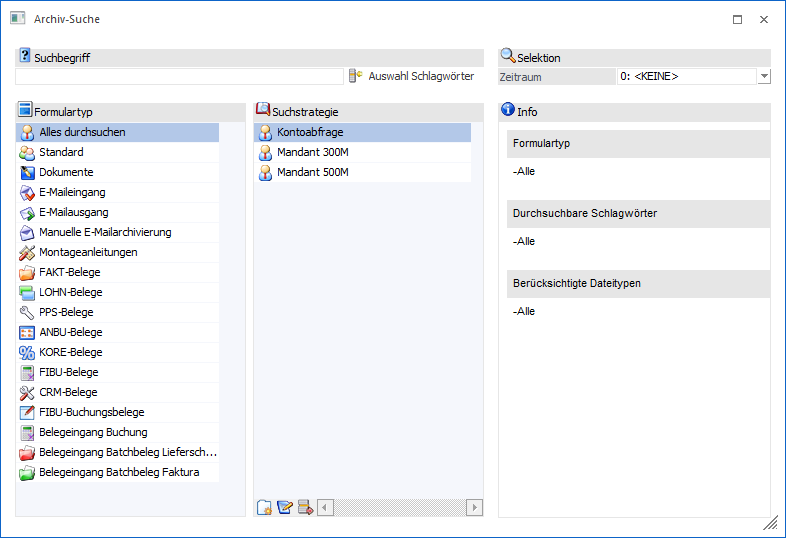
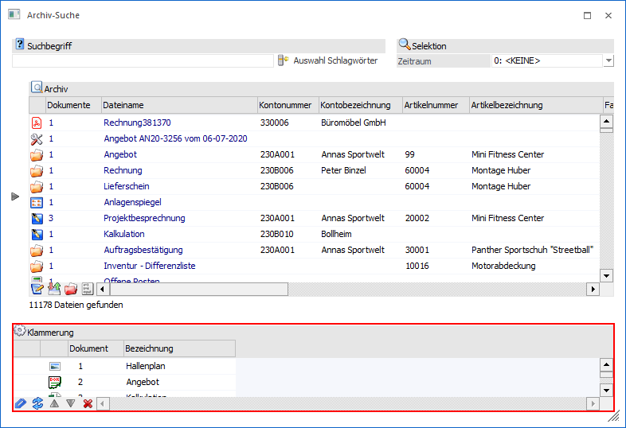

In jeder Applikation der WinLine START kann über…
1 CRM
1 Archiv Suche
… die Archivsuche gestartet werden.
Hinweis
Im Gegensatz zur Archivsuche Archiveintrag suchen kann hier das Suchergebnis, d.h. der Aufbau der Ergebnistabelle, mit Hilfe von Suchstrategien selber gestaltet werden.

Das Fenster "Archiv-Suche" ist in die folgenden Bereiche unterteilt, welche in den nachfolgenden Kapiteln detailliert beschrieben werden:
ü Bereich "Standard-Selektion"
Im
Kopf des Fenster steht die Standard-Selektion zur Verfügung, welche aus den
Elementen "Suchbegriff" und "Zeitraum" besteht.
ü Bereich "Suchstrategie"
In diesem
Bereich können Suchstrategien für die Archiv-Suche gewählt, editiert und
erstellt werden.
ü Bereich "Archivanzeige"
In diesem
Bereich werden alle gefundenen Archiveinträge, gemäß den zuvor getroffenen
Selektion, angezeigt.
Buttons
Ø Anzeigen
Durch Anwahl des Buttons "Anzeigen" bzw. der Taste F5 wird die Suche bzw. Aktualisierung der Suchergebnisse gestartet.
Ø Ende
Durch Anklicken des Buttons "Ende" bzw. der Taste ESC wird das Fenster geschlossen.
Ø Dokument anzeigen (nur Bereich "Archivanzeige")
Mit Hilfe dieses Buttons wird das aktuelle Dokument in dem dafür vorgesehenen Windows-Programm geöffnet.
Ø Dokument drucken (nur Bereich "Archivanzeige")
Durch Anwahl dieses Buttons können SPL-Dateien und Bilder (*.png, *.jpg, etc.) auf dem WinLine Standard-Drucker ausgegeben werden. Bilder werden hierbei zunächst in eine WinLine Spooldatei umgewandelt, welches auch im Fuß der Vorschau ersichtlich ist.
Ø Dokument mailen (nur Bereich "Archivanzeige")
Durch Anwahl des Buttons "Dokument mailen" wird (sofern ein Mail-Client installiert ist) ein neues Mail geöffnet, wobei das aktuelle Dokument als Anhang eingefügt wird. Durch die Einstellung "Mail Client = SMTP" wird das WinLine Postausgangsbuch geöffnet.
Ø Speichern unter… (nur Bereich "Archivanzeige")
Mit dieser Funktion kann ein Archivdokument, bzw. durch Mehrfachselektion mehrere Dokumente, an einem "externen" Speicherort abgespeichert werden. Durch Anwahl dieses Buttons öffnet sich zunächst der Ordnerdialog, aus dem der gewünschte Speicherort gewählt werden kann.
Ø OCR-Langtext hinzufügen (nur Bereich "Archivanzeige")
Dieser Button unterteilt sich in 3 Bereiche:
ü OCR-Langtext hinzufügen
Für das
aktuell ausgewählte Archivdokument wird eine Texterkennung durchgeführt und
dieser extrahierte Text zum Dokument als Schlagwort "95 Langtext"
hinzugefügt.
ü Konvertierung in eine
durchsuchbare PDF-Datei
Das aktuell ausgewählte Archivdokument wird in eine
durchsuchbare PDF-Datei konvertiert und eine neue Version zu diesem Dokument
daraus erzeugt.
ü Konvertierung in eine
durchsuchbare PDF-Datei und OCR-Langtext hinzufügen
Mit dieser Option wird
sowohl die Texterkennung als auch die Konvertierung in eine durchsuchbare
PDF-Datei durchgeführt.
Ø Vorschau (nur Bereich "Archivanzeige")
Durch Anwahl dieses Buttons wird die Dokumenten-Vorschau aktiviert, in welcher die einzelnen Archivdokument betrachtet werden können.
Hinweis
Ob die Vorschau aktiviert ist oder nicht wird benutzerspezifisch abgespeichert.
Ø Klammerung (nur Bereich "Archivanzeige")
Durch Anwahl des Buttons "Klammerung" wird die Tabelle "Klammerung" angezeigt. In dieser können mehrere Archivdokumente zu einem Eintrag zusammengefasst werden. Dieses ist dann sinnvoll, wenn z.B. mehrere Scans eines Geschäftsvorfalls zusammengefasst werden sollen. Natürlich können auch die Einträge eines z.B. Besprechungstermin (Protokoll, Bilder, etc.) zusammengefasst werden. Neben dem zusammenfassen ist auch ein Auflösen der Klammerung oder das Verschieben der Reihenfolge innerhalb der Klammerung möglich.

Hinweis
Die Bedienung der Tabelle wird im Kapitel Archiv-Suche - Bereich "Archivanzeige" erläutert.